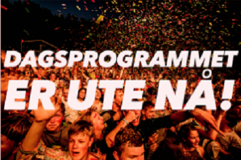

校园音乐节开幕啦！
无论你身处何方，说着何种语言，相信音乐总是能触动你内心最柔软的部分——音乐属于全人类。而歌唱作为一种音乐艺术的表现形式，以其简洁的方式，明快的表达与独特的舞台影响力成为当下最受欢迎的音乐传播形式。优美的歌声，动听的旋律是你我沟通的桥梁。而校园歌手以其独特的身份、年龄及音乐诠释视角为校园生活注入了一股生气勃勃的源流。

自从音乐类电视综艺节目在国内大范围兴起，电脑制作技术的普及和互联网的极速发展使“校园”里的爱乐人告别了一把木吉他弹唱的“民谣”时代，电子、金属、英伦、R&B等多元素的音乐充斥了没有围墙的校园生活，中国乐坛中的每一个潮流的兴起都会在校园里引起巨大的反响，校园音乐更加开放，同时也涌现出越来越多不同风格的“校园音乐人”，的当代大学生需要专属的音乐平台展现自我的创造性。
用户评论
- 很喜欢校园音乐节...[2017-05-04]
- 希望今后每年都能开展校园音乐节活动...[2017-06-03]